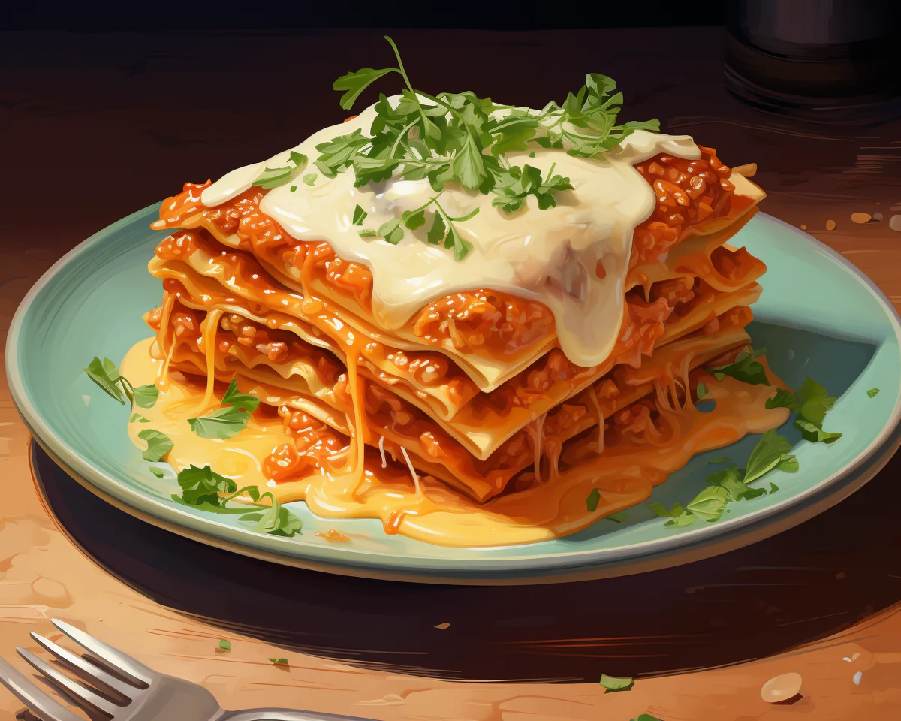

Home

Mystic Tomato Lasagna
In the realm of fantasy, where dragons soar and forests whisper secrets, lies a culinary marvel: Mystic Tomato Lasagna. Crafted from enchanted tomatoes cultivated under a magical moon, each bite unveils a symphony of flavors. Beneath its cheesy topping lies a filling of succulent tomatoes, roasted peppers, and aromatic herbs. Served with a drizzle of honey from faerie hives and a sprinkle of crystallized starlight, this lasagna is a culinary treasure that invites all to savor its mystical essence.
Ingredients
- 5 Mystic Tomatoes
- 12 Magic Pasta Sheets
- 3 CupsDragon Cheese
- 5 Cups Fairy Spinach
- 2 Tablespoons Elven Herbs
- 2 Cups Mermaid Bechamel Sauce
- 3 Tablespoon Phoenix Basil
- 2 Teaspoon Goblin Garlic
- 10 Magic Mushrooms
- 1 Tablespoon Wizard's Spice Blend
Instructions
- Prepare the Mystic Tomatoes:
Carefully slice the mystic tomatoes into thin rounds using a crystal knife blessed by ancient druids.
- Craft the Magic Pasta Sheets:
Boil the magic pasta sheets in a cauldron of enchanted water until al dente. Drain and set aside.
- Summon the Dragon Cheese:
Convince the friendly dragon to share its cheese, grate it finely, and set aside.
- Enchant the Fairy Spinach:
Saute the fairy spinach with a sprinkle of fairy dust until wilted and set aside.
- Invoke the Elven Herbs:
Chop the elven herbs finely and mix them with the wilted fairy spinach.
- Conjure the Mermaid Bechamel Sauce:
Heat the mermaid milk gently in a magical cauldron, whisking in goblin garlic and wizard's spice blend until thickened to perfection.
- Summon the Phoenix Basil:
Chiffonade the phoenix basil leaves and set aside for garnish.
- Assemble the Mystic Tomatoes Lasagna:
In an enchanted baking dish, layer the magic pasta sheets, mystic tomatoes, dragon cheese, enchanted spinach-herb mixture, and magic mushrooms, repeating until all ingredients are used up.
- Bake in the Heart of the Forest:
Place the assembled lasagna in the heart of the Enchanted Forest and bake under the light of the full moon until the cheese is bubbling and golden.
- Serve with a Sprinkle of Stardust:
Garnish the Mystic Tomatoes Lasagna with a sprinkle of phoenix basil and stardust for an extra touch of magic. Enjoy this fantastical feast with friends and fellow adventurers!